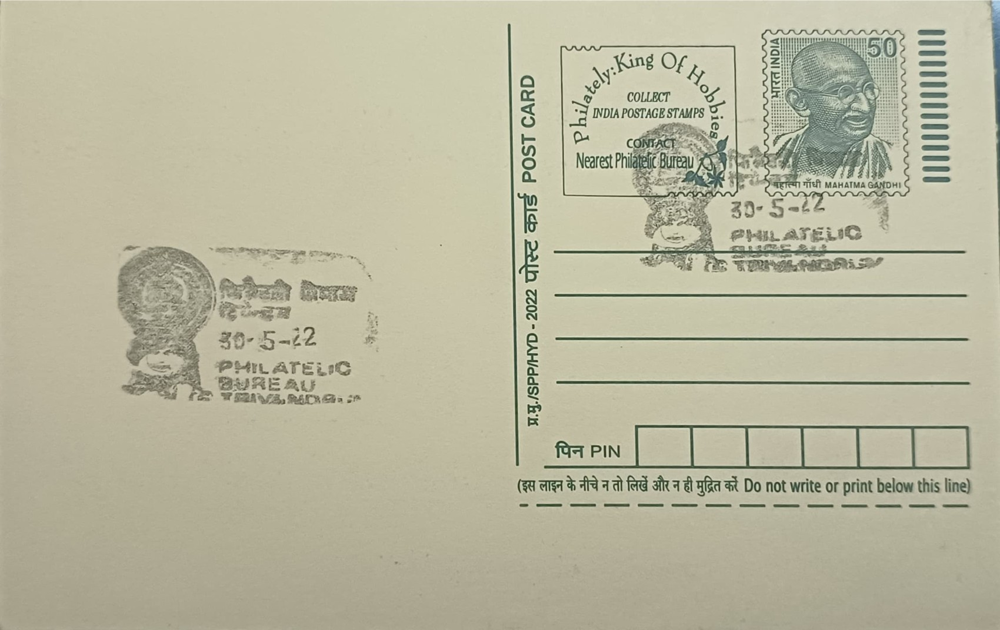

Face Mask of Kathakali
കഥകളിയുടെ മുഖംമൂടി


The elaborate Kathakali face, known in Malayalam as vesham or chutti-mukham, traces its lineage to Ramanattam, a cycle of eight Ramayana plays composed in the mid-seventeenth century by Kottarakkara Thampuran, a regional ruler of southern Kerala. Tradition holds that he devised this new dance-drama in Manipravalam after the Zamorin of Calicut refused to lend him performers of an existing court art for a temple ritual, prompting him to create a rival form of his own. Ramanattam is widely regarded as the direct ancestor of Kathakali, and the practice of transforming an actor's face into a fixed, legible character type through paint, rice-paste ridges and ornamentation grew out of this theatrical lineage over the following century.
Kathakali belongs to the group of classical performing arts of India and is distinguished from most other dance forms by its reliance on facial colour coding rather than dialogue to convey character and moral nature to the audience. The system recognises roughly five broad vesham categories: pacha, used for noble kings and divine heroes; kathi, for characters who are high-born yet villainous; thadi, further divided into red-, white- and black-bearded types for monkey-kings, hunters and other special figures; kari, reserved for demonic and forest-dwelling beings with jet-black faces marked in red and white; and minukku, a comparatively plain, luminous style used for sages, women and gentle characters. This codification allows an audience versed in the convention to identify a character's moral standing the instant the performer appears on stage.
The painting of a Kathakali face is carried out by specialist make-up artists called chuttikkaran using pigments traditionally derived from rice paste, lime, turmeric, indigo, and soot, along with vegetable and mineral colours, built up in layers over several hours before a performance begins. A distinctive feature of certain vesheams, particularly pacha and kathi, is the chutti, a raised white border of rice-paste and paper fixed along the jawline that frames the face and gives it a mask-like, three-dimensional quality rather than flat paint alone. Elaborate headdresses, broad skirts and metal ornaments are added after the facial work is complete, a process that can take an actor two to four hours of seated stillness before a night-long performance commences.
Thiruvananthapuram's association with this art form rests substantially on the patronage of the Travancore royal house, most notably Maharaja Swathi Thirunal Rama Varma, who ruled from 1829 to 1846 and is remembered chiefly as a prolific composer of Carnatic and Hindustani music, as well as a supporter of Mohiniyattam and other classical arts at his court. His successors, including Uthram Thirunal, extended this interest specifically to Kathakali, helping entrench the city as a centre of serious classical performance rather than only folk or temple-bound presentation. This royal backing laid the institutional groundwork on which later independent bodies built, shifting Kathakali's base of support in the capital from palace patronage toward public and institutional sponsorship over the twentieth century.
That shift produced organisations such as the Margi theatre and research centre, founded in Thiruvananthapuram in 1970 by D. Appukuttan Nair, Rama Iyer and others, which established a dedicated Kathakali training wing in 1974 and remains active today in both performance and the training of young artists alongside Kerala's older Kalamandalam tradition founded in 1927. Evening Kathakali clubs that emerged in the city from the 1960s further broadened the audience among working professionals rather than only temple-going communities. The painted Kathakali face associated with Thiruvananthapuram GPO today functions less as a static emblem than as the visible outcome of this continuing institutional ecosystem of training centres, performing troupes and audiences that keeps the art form in active practice across the city.
| Date of Introduction | January 1, 1979 |
|---|---|
| Address | Incharge, |
| Philatelic Bureau, Thiruvananthapuram GPO-PB, | |
| Thiruvananthapuram (dt.), Kerala - 695001. |